Rear Axle - 216RBI
NOTE: The ring and pinion gears are service in a matched set. Do not replace the pinion gear without replacing the ring gear.REMOVAL
1. Remove differential assembly from axle housing.
2. Mark pinion yoke and propeller shaft for installation alignment.
3. Disconnect propeller shaft from pinion yoke. Using suitable wire, tie propeller shaft to underbody.
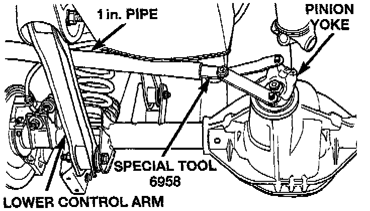
4. Using Holder 6958, or equivalent to hold yoke and a short length of 1 inch pipe, remove the pinion yoke nut and washer.
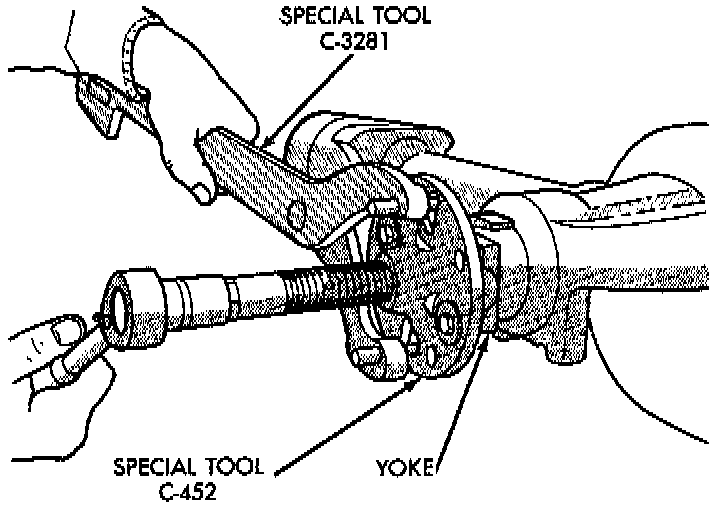
5. Using Remover C-452 and Wrench C-3281, or equivalents, remove the pinion yoke from pinion shaft.
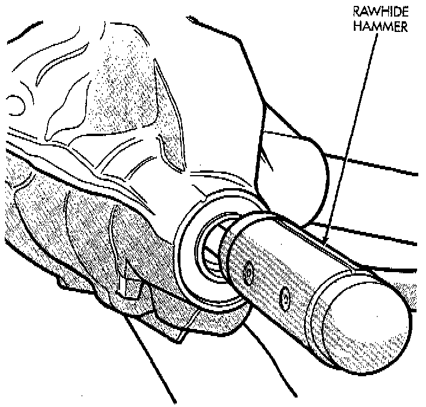
6. Remove the pinion gear from housing. Catch the pinion with your hand to prevent it from falling and being damaged.
7. Remove the pinion seal with a slide hammer or pry out with bar.
8. Remove oil slinger, if equipped, and the front pinion bearing.
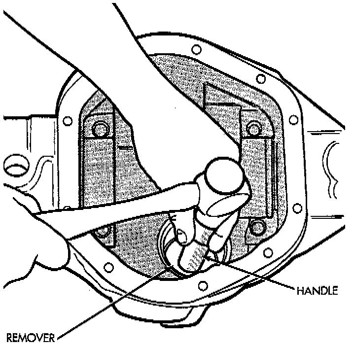
9. Remove the front pinion bearing cup with Remover D-103 and Handle C-4171, or equivalents.
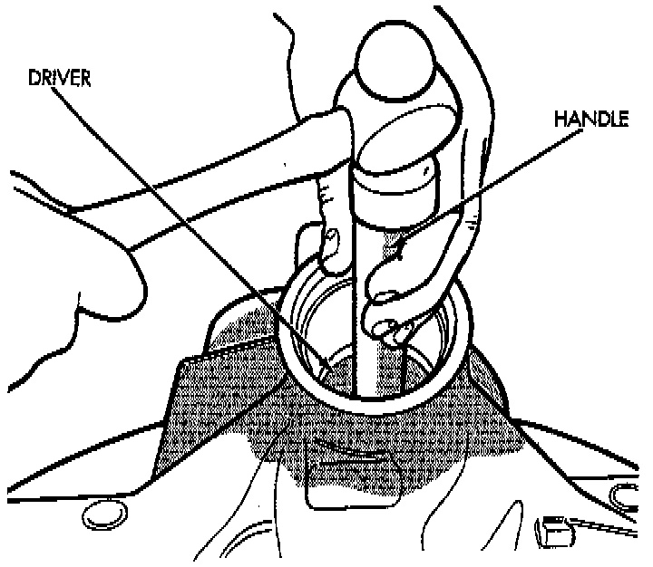
10. Remove the rear bearing cup from housing. Use Remover C-4307 and Handle C-4171, or equivalents.
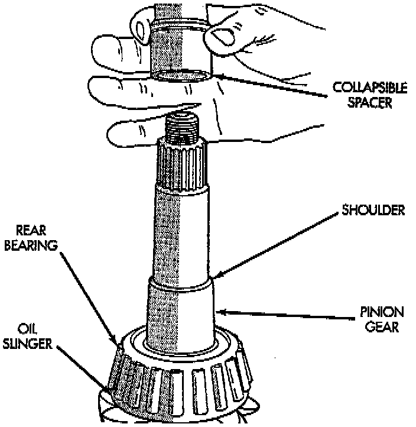
11. Remove the collapsible preload spacer.
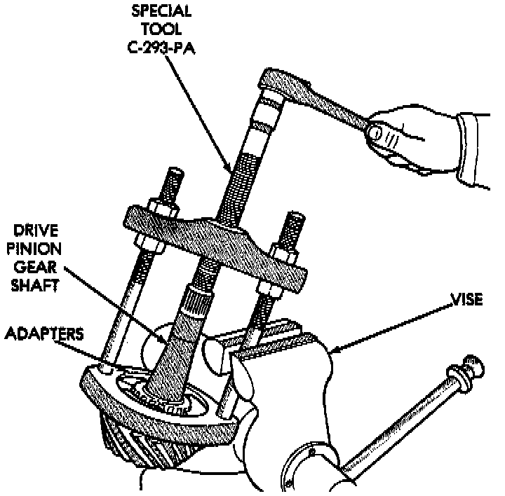
12. Remove the rear bearing from the pinion with Puller/Press C-293-PA and Adapters C-293-42, or equivalents. Place 4 adapter blocks so they do not damage the bearing cage.
13. Remove the pinion depth shims from the pinion gear shaft. Record the total thickness of the depth shims.
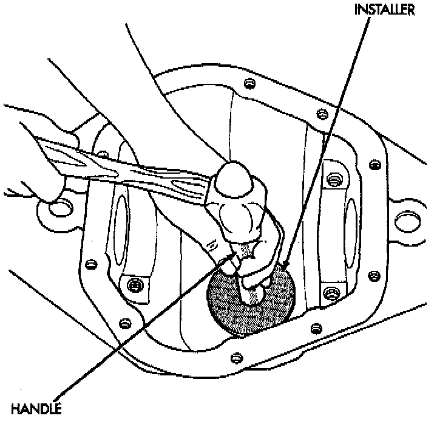
INSTALLATION
1. Apply MOPAR Door Ease stick lubricant to outside surface of bearing cup. Install the pinion rear bearing cup with Installer C-4308 and Driver Handle C-4171, or equivalents. Ensure cup is correctly seated.
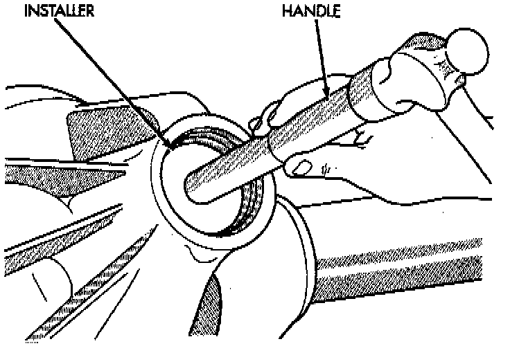
2. Apply MOPAR Door Ease stick lubricant to outside surface of bearing cup. Install the pinion front bearing cup with Installer D-129 and Handle C-4171, or equivalents.
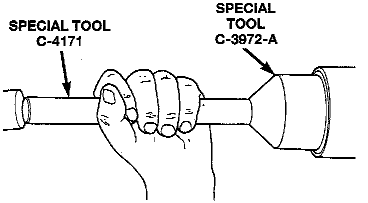
3. Install pinion front bearing and oil slinger, if equipped. Apply a light coating of gear lubricant on the lip of pinion seal. Install seal with Installer C-3972-A and Handle C-4171, or equivalents.
NOTE: Pinion depth shims are placed between the rear pinion bearing cone and pinion gear to achieve proper ring and pinion gear mesh. If the factory installed ring and pinion gears are reused, the pinion depth shim should not require replacement or adjustment. Refer to Pinion Gear Depth to select the proper thickness shim before installing rear pinion bearing cone.
4. Place the proper thickness pinion depth shim on the pinion gear.
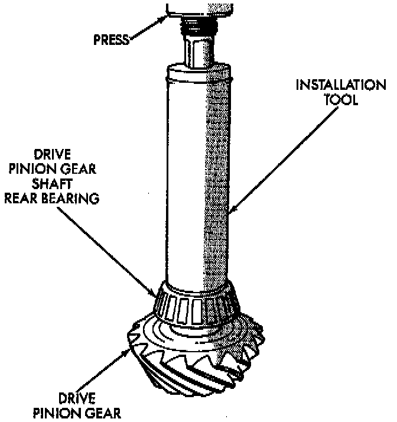
5. Install the rear bearing (and slinger if used) on the pinion gear with Installer 6448, or equivalent.
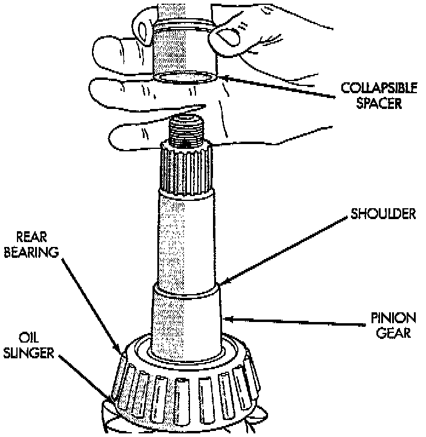
6. Install a new collapsible preload spacer on pinion shaft.
7. Install pinion gear in housing.
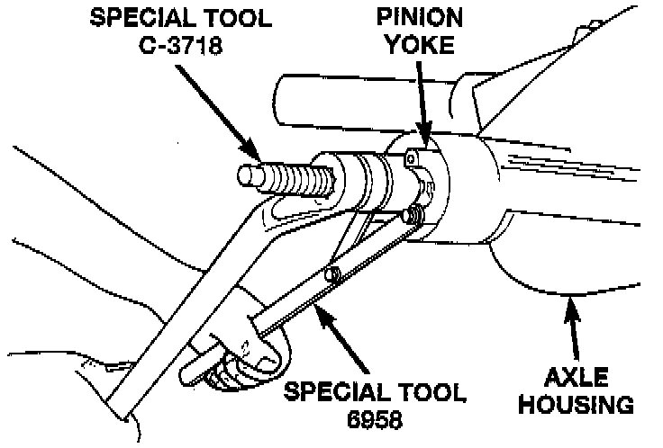
8. Install yoke with Installer C-3718 and holder 6958, or equivalents.
9. Install the yoke washer and a new nut on the pinion gear. Tighten the nut to 298 Nm (220 ft. lbs.) minimum. Do not over-tighten. Maximum torque is 380 Nm (280 ft. lbs.).
CAUTION: Never loosen pinion gear nut to decrease pinion gear bearing preload torque and never exceed specified preload torque. If preload torque is exceeded a new collapsible spacer must be installed. The torque sequence will have to be repeated.
NOTE: If the spacer requires more than 280 ft. lbs. torque to crush, the collapsible spacer is defective.
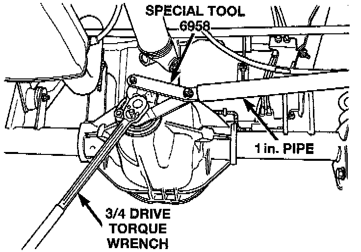
10. Using yoke holder 6958, or equivalent, a short length of 1 inch pipe, and a torque wrench set at 380 Nm (280 ft. lbs.), crush collapsible spacer until bearing end play is taken up.
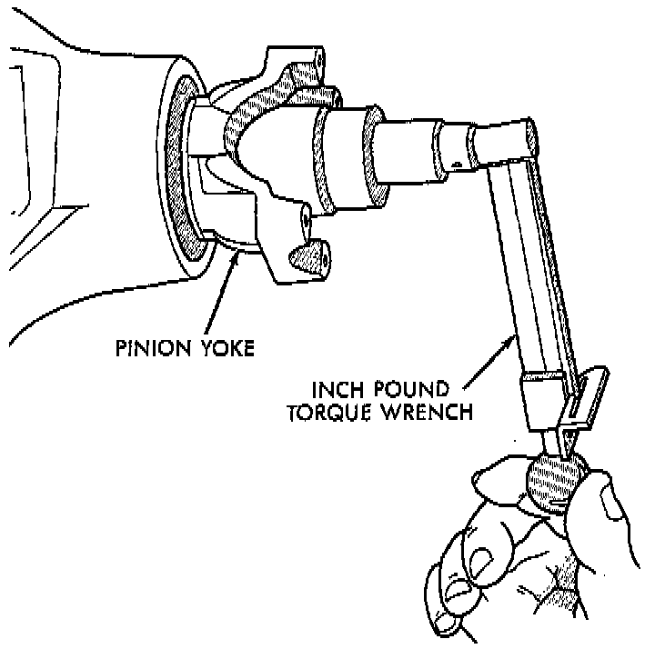
11. Slowly tighten the nut in 6.8 Nm (60 inch lbs.) increments until the rotating torque is achieved. Measure the rotating torque frequently to avoid over crushing the collapsible spacer.
12. Check bearing rotating torque with an inch pound torque wrench. The torque necessary to rotate the pinion gear should be:
- Original Bearings: 1 to 3 Nm (10 to 20 inch lbs.).
- New Bearings: 2 to 5 Nm (15 to 35 inch lbs.).
13. Align previously made marks on yoke and propeller shaft and install propeller shaft.
14. Install differential housing into the axle housing.